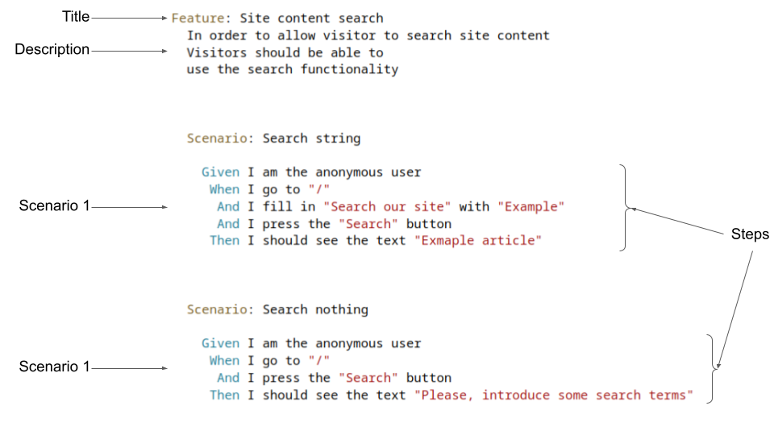
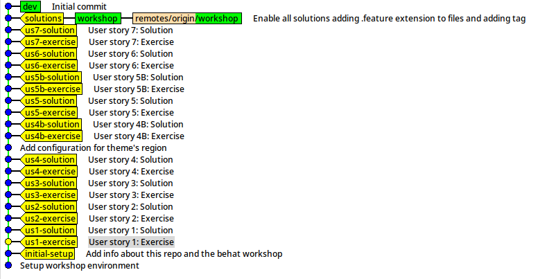

Behat and Drupal
Index
Index
- Workshop requisites
- Behat introduction
- Exercises
Workshop requisites
Workshop requisites
- Git
- Composer
- Make
- Docker
- Docker compose (v1)
Environment setup
-
Clone repository
git clone git@github.com:rsanzante/drupalcampspain2023-behat-workshop.git -
Install packages
composer install -
Run assistant
composer boilerplate:assistant
Behat Introduction
Behat Introduction
- BDD framework (Behavior Driven Development)
- Describe a behavior that is automatically tested
- Acceptance tests
- Natural language
What does describe mean?
- User Stories
- Functionality from user perspective
- Written using Gherkin language
User Story example
Gherkin
- Language to write User Stories
-
Organize using
.featurefiles - Each feature is functionality
- Functionalities are described/tested using scenarios
- Each scenario is composed by steps
- The first word of a step (Given, Then, And, When) is NOT relevant
What does automatically tested mean?
- Each step is mapped to actions
- Actions -> PHP functions
-
Drivers
- Goutte
- Selenium2
- Drupal API
- …
Behat Extension
- Drupal module that extends Behat
-
Provides Drupal steps
- Access as a user, role, etc
- Creation of content, users, etc
- Status message detection
- …
-
Support for Drupal concepts
- Region detection
- Login detection
- …
Behat Contexts
- Standard way to extend Behat
- Typical use: adding new steps
-
Examples
- Drupal messages
- Batch API
- Debugging
- Forms
- …
Exercises
Exercises
- Initial setup
- New project
- Writing acceptance tests
Initial setup
Initial setup
- Behat can be hard to setup
- We'll use Metadrop's Boilerplate
- Containers: PHP + Apache + Selenium + Chrome + …
- Behat is preconfigured
Environment setup
-
Clone repository
git clone git@github.com:rsanzante/drupalcampspain2023-behat-workshop.git -
Install packages
composer install -
Run assistant
composer boilerplate:assistant
Container commands
-
Up:
make up
-
Stop
make stop
-
Remove
make prune
-
Shell in the PHP container
make shell
Behat commands
Inside the PHP container (make shell
)
-
Ejecutar tests:
behat
-
Show available steps:
behat -dl
-
Run tests of a given tag:
behat --tag=foo
Git
- Use tags to go to each exercise and its solution.
-
Start at tag
us1-exercise
A new project
A new project
"We have a project for a recipe website, where users can see what recipes are available and search for them. We would need to categorize them in some way, with tags or something similar.
It should also have other content related to recipes,
which the SEO department insists is essential, something
like articles or the like. There will be different people contributing recipes, so we want to be able to review what is published before users see it.
Oh, and the content should display other related content, which is also necessary for SEO.
What challenges do you foresee
? We would also need to have lists
of recipes
and articles.
Security is important, of course,
as we cannot afford a
defacement
; it would be detrimental to our image.
Above all, it should have a good
design…………
"
Write the specifications
- Site with two types of content: recipes and articles
- Lists of recipes and articles by date
- Recipe search functionality
- Editorial workflow
- Related articles on each article page
- Homepage with a bit of everything
- …
Writing Acceptance Tests
Writing Acceptance Tests
-
Add a
.featurefile -
Where?
tests/functional/behat/features/umami/ - Describe the User Story using scenarios with Gherkin language
User Story 1: View Recipe List
The user should be able to view a list of recipes.
Suggested steps:
Suggested steps:
-
Given I am anonymous user -
Given I go to "<path>" -
And I click "<text to click>" -
And I should see "<text>"
File
recipe_list.feature
User Story 2: Access the Featured Recipe on the Homepage
The user should be able to view the featured recipe on the homepage and access it directly from the homepage.
Suggested steps:
Suggested steps:
-
Given I am anonymous user -
Given I go to "<path>" -
And I click "<text to click>" -
And I should see "<text>"
File
featured_recipe.feature
User Story 3: Access Homepage Article
The user should be able to see an article on the homepage and access it directly from the homepage.
Suggested steps:
Suggested steps:
-
Given I am anonymous user -
Given I go to "<path>" -
And I click "<text to click>" -
And I should see "<text>"
File
home_page_article.feature
User Story 4: Access an Article
The user should be able to view an article, including its tags, related articles, and
breadcrumb.
Suggested steps:
Suggested steps:
-
Given I am anonymous user -
Given I go to "<path>" -
And I should see "<text>"
File
article_view.feature
Issues with User Story 4:
- The exact text of the breadcrumb is not clear or is already present on the page
- How to test that the article itself does not appear in related articles?
Defining regions of the theme
- Declare regions using CSS selectors
- Ssteps can use declared regions
Edit behat.yml and add the following to the property
NuvoleWeb\Drupal\DrupalExtension
:
region_map:
pre header: ".region-pre-header"
highlighted: ".region-highlighted"
header: ".region-header"
breadcrumb: ".region-breadcrumbs"
content: ".region-content"
content bottom: ".region-content-bottom"
tabs: ".region-tabs"
sidebar: ".region-sidebar"
bottom: ".region-bottom"
footer: "region-footer"
User Story 4B: Access an Article
Same scenario as User Story 4 but using regions for the steps.
Suggested steps:
Suggested steps:
-
Given I am anonymous user -
Given I go to "<path>" -
And I should see "<text>" -
And I should not see "<text>"
File
article_view_improved.feature
Using the Drupal API
- Certain steps require making changes to the site
- For example: creating a user, creating entities, running cron, etc
-
By adding the
@apitag to a scenario, the Drupal API driver is used - You can execute PHP code in the context of bootstrapped Drupal
User Story 5: Access to Recipe Creation form
Only
Suggested steps:
author
users should be able to access the recipe creation form.
Suggested steps:
-
Given I am logged in as a user with the <rol> role -
Given I go to "<path>" -
And I should see "<text>" -
And I should not see "<text>"
You need to add
@api
to the scenario
File
recipe_edit_form_access.feature
Issues with User Story 5:
- The tests are repetitive
- Only some parameters change
- How to reuse tests?
Scenario Outline
- Repetitive tests that only differ in some parameters
- Solution: parametrizable scenarios using
Scenario Outline
Scenario Outline: An example
Given I enter the <value> value
Then I should see <value>
Examples:
| value |
| foo |
| bar |
User Story 5B: Access to Recipe Creation
Same scenario as User Story 5 but using
Scenario Outline
File
recipe_edit_form_access_scenario_outline.feature
Using a Complete Browser
- We have been using HTTP requests and process the result
-
By adding the
@javascripttag to a scenario, a JavaScript-capable engine is used (for example, Chrome via Selenium2) - Required for certain interactions, like fields with CKEditor
User Story 6: Recipe Creation
Create a recipe using the recipe form.
Suggested steps:
-
Then I fill in "<field>" with "<value>" -
And I select "<value>" from "<select>" -
And I scroll to "<field>" field -
And I fill in the rich text editor "Summary" with "This is a summary" -
And I assign the media with name "nombre" to "id de field" field
You need to add
@api and @javascript
to the scenario
File
recipe_create.feature
Creating Custom Steps
- Add specific steps for a project
- Simplify repetitive actions through a step
- Maintain the readability of the tests
FeatureContext
-
Add a function with an annotation that associates it with a step
/** * @When I do something with :argument */ public function iDoSomethingWith($argument) { // do something with $argument } - Interact with the browser using Mink
-
Execute Drupal code if
@apiis active in the scenario - Any action executable through PHP
User Story 7: Using a Custom Step
Create and use a custom step that takes to the list of recipes
Step:
Step:
When I go to the recipe list
-
Edit the file
tests/functional/behat/bootstrap/FeatureContext.php - Add a function with the custom step
Suggested code
-
$this->visitPath('<path>'); -
$session->getPage()->find('region', '<region>'); -
$region->findLink('<enlace>');
File
custom_step.feature
References
References
- Behat Official documentation
- Nuvole's Behat Contexts
- Metadrop's Behat Contexts
- Drupal Boilerplate with Docker and Behat preconfigured